| Voitures | B10 | A7D | A9 |
|---|---|---|---|
| Compagnie | SNCF | Le Capitole | Le Capitole |
| Livrée | C160 | Capitole | Capitole |
| N° UIC | 51 87 23 70 482-6 | 50 81 10 18 383-5 | 51 87 19 90 351-1 |
| N° de série | |||
| Images | 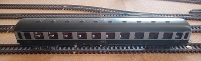 | 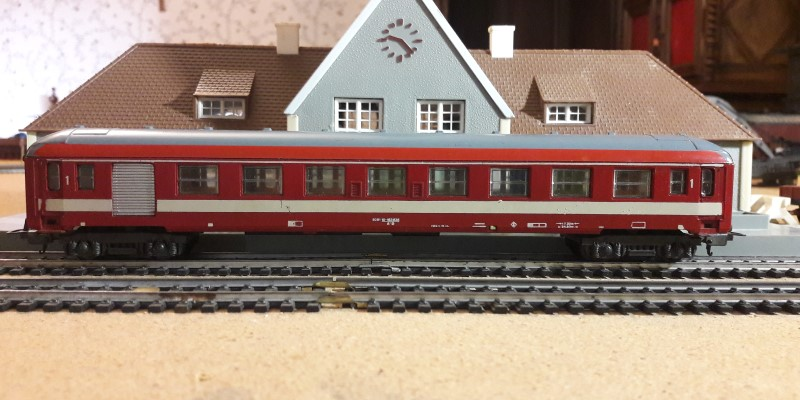 | 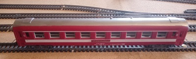 |
| 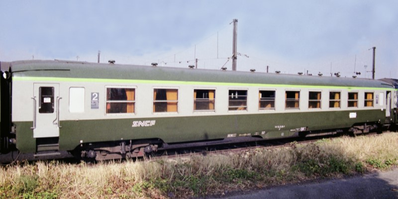 | 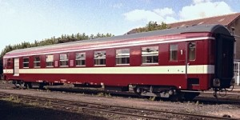 | 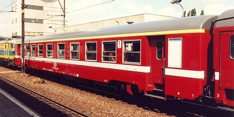 | |
| Marques | Lima | Jouef | Jouef |
| Nombre de voitures | 1 | 1 | 3 |
| Voitures | Voiture-Restaurant | Fourgon à bagages | Voiture-Lit |
| Compagnie | Le Capitole | Compagnie Internationale des Wagons-Lits | Compagnie Internationale des Wagons-Lits |
| Livrée | Capitole | CIWL | CIWL |
| N° UIC | 51 87 88 80 006-9 | ||
| N° de série | CIWL - 1247 | CIWL - 3892 | |
| Images | 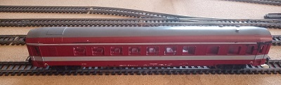 | 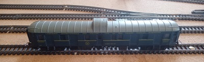 | |
| 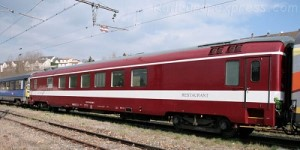 | 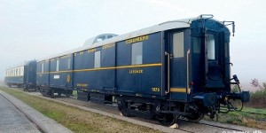 | 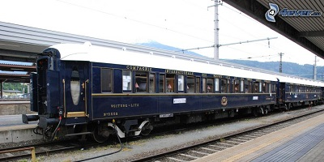 | |
| Marques | Jouef | Jouef | Jouef |
| Nombre de voitures | 1 | 2 | 3 |
| Voitures | Voiture-Lit | Pullman | Voiture-Restaurant |
| Compagnie | Compagnie Internationale des Wagons-Lits | Compagnie Internationale des Wagons-Lits | Compagnie Internationale des Wagons-Lits |
| Livrée | CIWL | CIWL | CIWL |
| N° UIC | |||
| N° de série | CIWL - 3933 | CIWL - 4029 | CIWL - 4216 |
| Images | 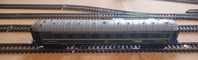 | 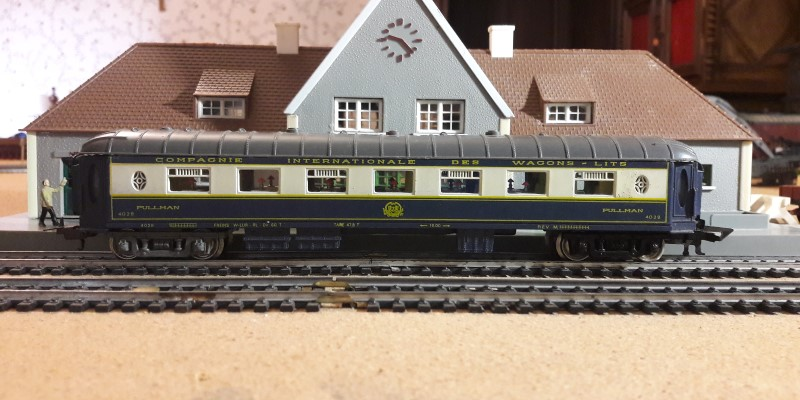 | 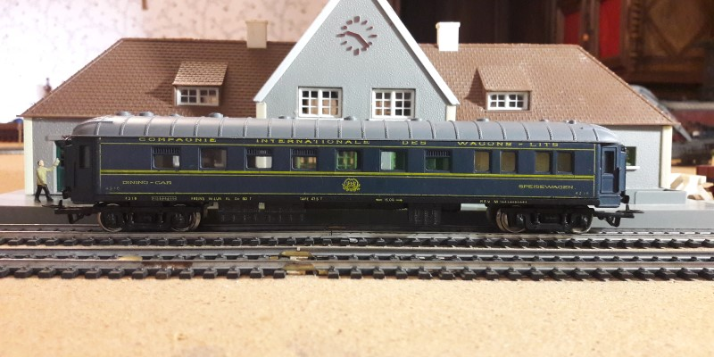 |
| 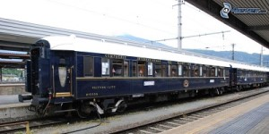 | 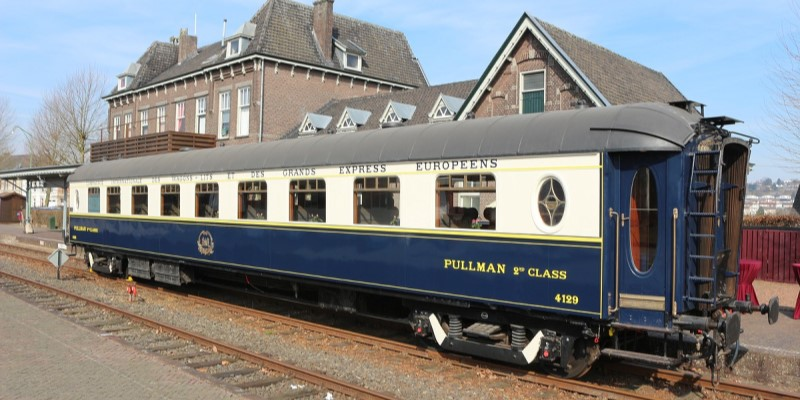 | 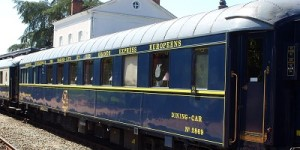 | |
| Marques | Jouef | Jouef | Jouef |
| Nombre de voitures | 2 | 1 | 1 |
| Voitures | DEV AO A8 myfi | DEV Inox A8 myfi | A4Dtux "Grand confort" |
| Compagnie | SNCF | SNCF | Trans Europ Express |
| Livrée | Forestier | Inox | Grand Confort |
| N° UIC | |||
| N° de série | CIWL - 5146 | CIWL - 1006 | |
| Images | |
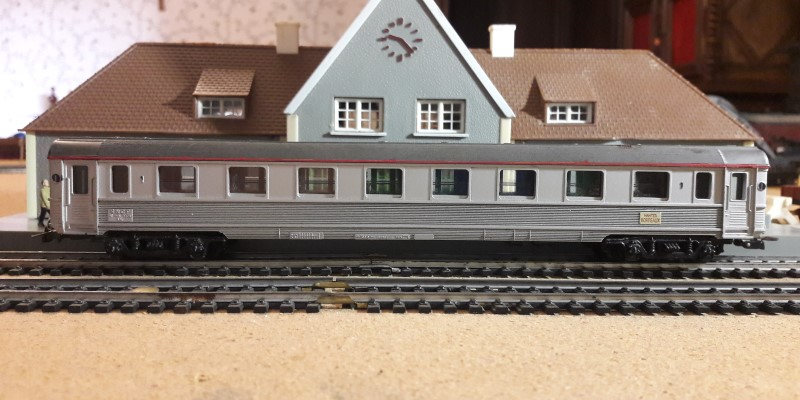 | 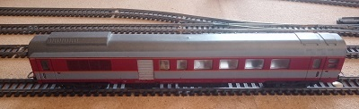 |
| 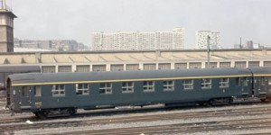 | 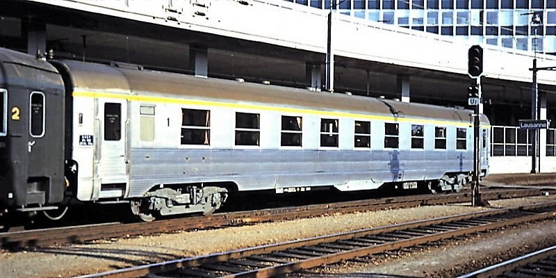 | |
|
| Marques | Jouef | Jouef et Meccano | Jouef |
| Nombre de voitures | 2 | 4 | 1 |
| Voitures | A8u "Grand confort" | Voiture-Lit | Voiture-Restaurant |
| Compagnie | Trans Europ Express | Trans Euro Nuit | SNCF |
| Livrée | TEE | TEN | Rouge |
| N° UIC | 61 87 18 99 001-2 | 51 87 88 80 002-8 | |
| N° de série | |||
| Images | 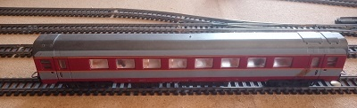 | 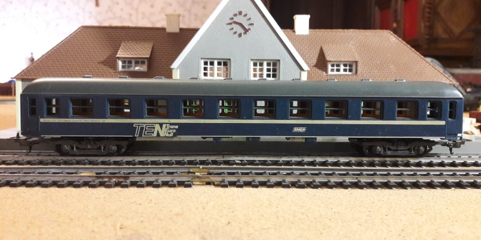 | 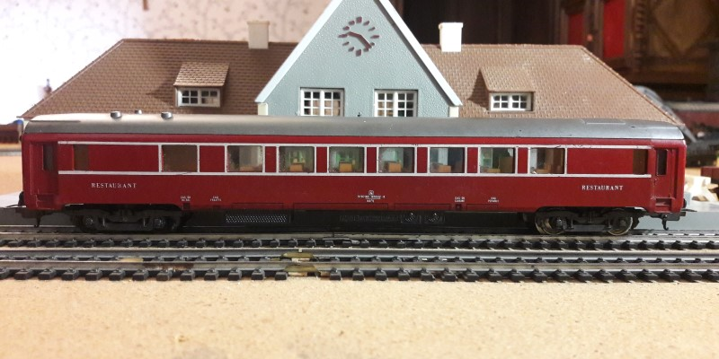 |
|
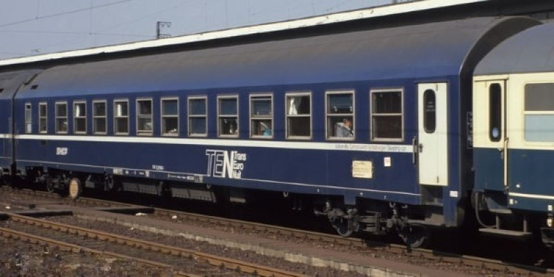 | 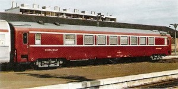 | |
| Marques | Jouef et Lima | Lima | Jouef |
| Nombre de voitures | 2 | 1 | 7 |